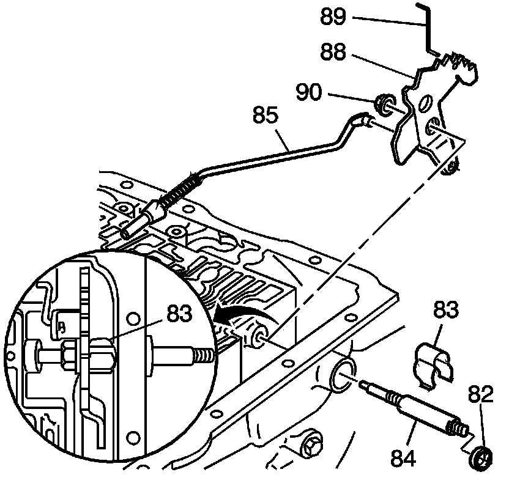
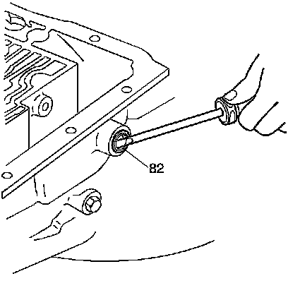
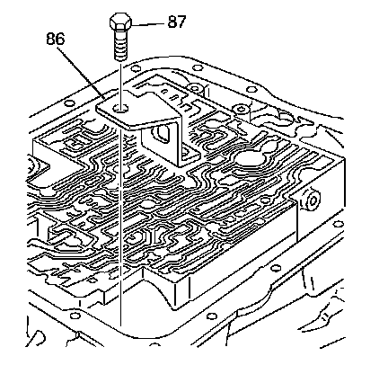

Inner Manual Linkage Removal
Inner Manual Linkage Removal

1. Remove the following parts:
1. Hex head nut (90)
2. Manual valve link (89)
3. Detent lever (88)
4. Parking lock actuator assembly (85)
5. Manual shaft retainer (83)
6. Manual shaft (84)

2. Remove the manual shaft seal (82) with a screwdriver.

3. Remove the following components:
1. The parking lock bracket bolt (87)
2. The parking lock bracket (86)